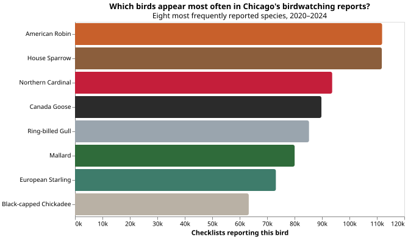
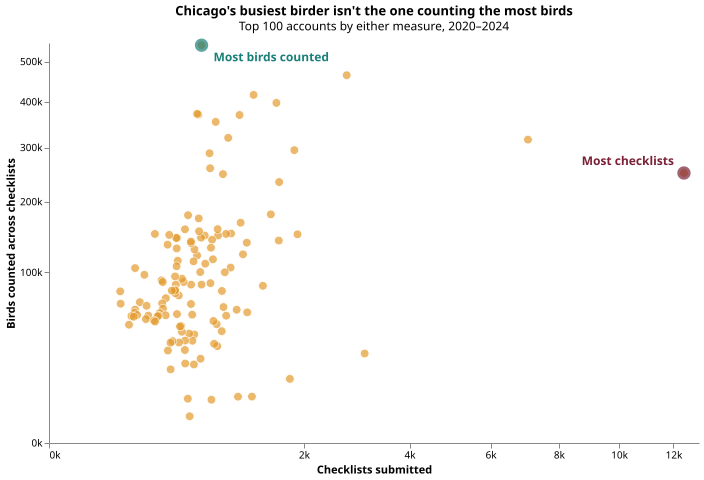
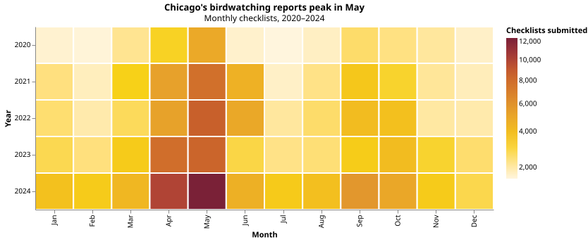

The Birds
What birds are Chicagoans reporting most often?

The Birders
Does submitting more checklists mean counting more birds?

The City
Where and when are Chicago's birdwatching reports concentrated?

What Chicago's birdwatchers can tell us about the city's birds, and how the people doing the counting shape what we see.
Chicago eBird data, 2020–2024
What birds are Chicagoans reporting most often?

Does submitting more checklists mean counting more birds?

Where and when are Chicago's birdwatching reports concentrated?
